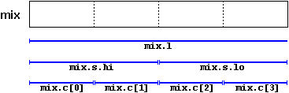

|
Section 3.6 User defined data types |
 |
|
| |
|
Section 3.6 User defined data types |
|
|
| |
We have already seen a sort of data type that is defined by the user (programmer): the structures. But moreover than these there are other sorts of user defined data types:
typedef existing_type new_type_name ;where existing_type is a C++ fundamental or any other defined type and new_type_name is the name that the new type we are going to define will receive. For example:
typedef char C;In this case we have defined four new data types: C, WORD, string_t and field as char, unsigned int, char* and char[50] respectively, that we could perfectly use later as valid types:
typedef unsigned int WORD;
typedef char * string_t;
typedef char field [50];
C achar, anotherchar, *ptchar1;typedef can be useful to define a type that is repeatedly used within a program and it is possible that we need to change it in a later version, or if a type you want to use has a too long name and you want it to be shorter.
WORD myword;
string_t ptchar2;
field name;
union model_name {
type1 element1;
type2 element2;
type3 element3;
.
.
} object_name;
union mytypes_t {
char c;
int i;
float f;
} mytypes;
mytypes.ceach one of a different data type. Like all of them are referring to a same location in memory the modification of one of the elements will afect to the value of all of them.
mytypes.i
mytypes.f
One of the uses a union may have is to unite an elementary type with an array or structures of smaller elements. For example,
union mix_t{
long l;
struct {
short hi;
short lo;
} s;
char c[4];
} mix;

 In C++ we have the option that unions be anonymous. If we include a union in a
structure without any object name (the one that goes after the curly brackets { })
the union will be anonymous and we will be able to access to the elements directly by its
name. For example, look at the difference between these two declarations:
In C++ we have the option that unions be anonymous. If we include a union in a
structure without any object name (the one that goes after the curly brackets { })
the union will be anonymous and we will be able to access to the elements directly by its
name. For example, look at the difference between these two declarations:
| union | anonymous union |
struct {
char title[50];
char author[50];
union {
float dollars;
int yens;
} price;
} book;
|
struct {
char title[50];
char author[50];
union {
float dollars;
int yens;
};
} book;
|
The only difference between the two pieces of code is that in the first one we gave a name to the union (price) and in the second not. The difference is when accessing to members dollars and yens of an object. In the first case it would be:
book.price.dollarswhereas in the second it would be:
book.price.yens
book.dollarsOnce again I remind you that because it is a union, the fields dollars and yens occupy the same space in the memory so they cannot be used to store two different values, that means that you can include a price in dollars or yens but not both.
book.yens
enum model_name {
value1,
value2,
value3,
.
.
} object_name;
enum colors_t {black, blue, green, cyan, red, purple, yellow, white};Notice that we do not include any fundamental data type in the declaration. To say it somehow we have created a new data type without being based on any other existing one: the type color_t, whose possible values are the colors that we have enclosed within curly brackets {}. For example, once declared the colors_t enumeration the following expressions will be valid:
colors_t mycolor;In fact our enumerated data type is compiled as an integer and their possible values are any type of integer constant specified. If this one is not specified, the integer value equivalent to the first possible value is 0 and the following ones follow a +1 progression. Thus, in our data type colors_t that we defined before, black would be equivalent to 0, blue would be equivalent to 1, green to 2 and so on.
mycolor = blue;
if (mycolor == green) mycolor = red;
If we explicitly specify an integer value for some of the possible values of our enumerated type (for example the first one) the following values will be the increases of this, for example:
enum months_t { january=1, february, march, april,
may, june, july, august,
september, october, november, december} y2k;
| © The C++ Resources Network, 2000-2001 - All rights reserved |
 Previous:
Previous:3-5. Structures |
 index |
 Next:
Next:4-1. Classes. |